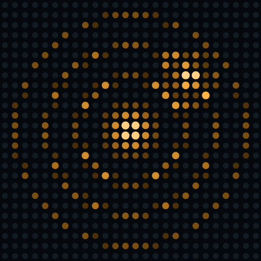

ECHO // ZERO
Find hidden signals by sound alone. A 3D audio game you play with eyes closed, made for blind and visually impaired players first.
Szukaj ukrytych sygnałów samym słuchem. Gra dźwiękiem 3D z zamkniętymi oczami.
Finde Signale nur nach Gehör. Ein 3D-Audiospiel mit geschlossenen Augen.
Privacy Policy / Polityka prywatności / Datenschutzerklärung
Dawid Szadurski, Murrhardt, Germany · kontakt@d-sz.de